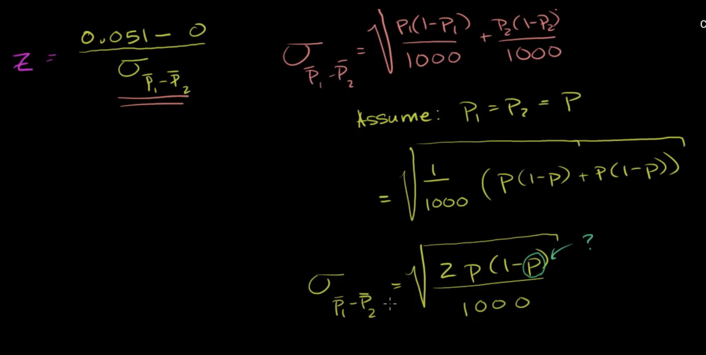

Statistics
Statistics Measures
- Mean: The mean is a measure of central tendency, calculated as the sum of all values divided by the number of values. It can be significantly influenced by extremely high or low values in the dataset.
- Median: The median represents the middle value when the data is sorted in ascending order. It is less affected by outliers compared to the mean.
- Mode: The mode is the value that appears most frequently in the dataset.
- Outliers: Outliers are values that differ significantly from other observations. In a normal distribution, outliers are often defined as values that fall outside the range of Q3 + 1.5 * IQR or Q1 - 1.5 * IQR.
-
Z-Score:
A z-score measures exactly how many standard deviations above or below the mean a data point is. We can determine thresholds (e.g., 2, 2.5, 3) to decide on outliers.
- Z-scores can be applied to all distributions, not just normal distributions.
- Interquartile Range (IQR): The IQR is the range between the first quartile (Q1) and the third quartile (Q3), encompassing the middle 50% of the data. It helps in identifying the spread and detecting outliers.
Visualizations
- Categorical Data: bar charts and two-way tables.
- Histograms: A histogram displays numerical data by grouping it into bins of equal width. Each bin's height corresponds to the number of data points within that bin. Bins are also referred to as intervals, classes, or buckets.
- Stem and Leaf Plots: This plot displays numerical data by splitting each data point into a leaf (usually the last digit) and a stem (the leading digit or digits).
- Box Plot: A box plot shows the minimum, maximum, median, and interquartile range (IQR) of the data.
- Line Graph: A line graph is useful for showing trends over time. It's important to be cautious about the scale used in the graph.
- Scatterplot: Shows the relationship between two numerical variables. There is no standard rule for identifying outliers, but scatterplots are useful for visualizing correlations.
- Cumulative Relative Frequency Graph: The Y-axis represents percentiles, showing the cumulative distribution of the data.

Sampling and Distributions
-
Sampling: Selecting a subset from a population to estimate characteristics. Sampling methods can be:
- Probability-based: Each member of the population has a known probability of being selected.
- Non-probability based: Selection of individuals is based on convenience, judgment, or quota.
-
Distribution: Refers to the center and spread (variability) of data. When analyzing distributions, consider:
- Center: Typically described by the mean or median.
- Spread/Variability: Described by measures like the standard deviation (SD) or the interquartile range (IQR).
-
Shift: When adding a constant to each data point:
- Mean and median will change by the same constant.
- Standard deviation (SD) and interquartile range (IQR) will remain unchanged.
-
Scale: When multiplying each data point by a constant:
- Mean, median, SD, and IQR will all change by the same multiplication factor.

-
Central Limit Theorem:
The central limit theorem states that if a random sample is drawn from any population, regardless of its distribution, the distribution of the sample means will be approximately normally distributed as the sample size increases.
- This allows for inferences about a population based on a sample, even without knowing the population's distribution.
- By using the central limit theorem, we can assume that the sample means will be normally distributed and use this information to perform hypothesis tests or construct confidence intervals.
-
Combining Random Variables:
-
Effect on Mean and Variance:
When combining random variables, those that follow a normal distribution, the resulting distribution also follows a normal distribution. Here's how the mean, standard deviation, and variance are affected:

-
Effect on Mean and Variance:
When combining random variables, those that follow a normal distribution, the resulting distribution also follows a normal distribution. Here's how the mean, standard deviation, and variance are affected:
-
Normal Distribution: A type of probability distribution commonly observed in real-world phenomena such as heights, weights, or IQ scores.
- Also known as a Gaussian distribution or a bell curve due to its shape.
- The bell curve is defined by the mean and the standard deviation.
- The 68-95-99.7 rule explains the proportion of data that falls within specific standard deviations:
- 68% of the data are within one standard deviation of the mean.
- 95% of the data are within two standard deviations of the mean.
- 99.7% of the data are within three standard deviations of the mean.

-
Binomial Distribution:
- A binomial distribution describes the number of successes in a fixed number of independent trials of a binary (yes/no) experiment, each with the same probability of success.
-
Binomial Variable:

-
Probability Mass Function: The probability of getting exactly \( k \) successes in \( n \) trials is given by:
\( P(X = k) = C(n, k) \cdot p^k \cdot (1 - p)^{(n - k)} \)
where:- \( C(n, k) \) is the binomial coefficient (combinations).
- \( p \) is the probability of success on a single trial.
- \( n \) is the number of trials.
- \( k \) is the number of successes.
- Example:

-
Mean and Variance:
- Mean: \( \mu = n \cdot p \)
- Variance: \( \sigma^2 = n \cdot p \cdot (1 - p) \)
-
Bernoulli Distribution:
- A Bernoulli distribution is a special case of the binomial distribution where the number of trials \( n \) is 1.
-
Probability Mass Function: The probability of success in a single Bernoulli trial is given by:
\( P(X = 1) = p \)
\( P(X = 0) = 1 - p \)
where:- \( p \) is the probability of success.
- \( 1 - p \) is the probability of failure.
-
Mean and Variance:
- Mean: \( \mu = p \)
- Variance: \( \sigma^2 = p \cdot (1 - p) \)
-
Using Population to Estimate Sample Characteristics:
-
Sample Proportion Distribution:
- The distribution of sample proportions is approximately normal if:
- The expected number of successes and failures is at least 10 (i.e., ѕp ≥ 10 and ѕ(1 - p) ≥ 10).
- The sample size is ≤ 10% of the population, or sampling is done with replacement to ensure independence.
- Sample Mean = \( p \) (the population proportion)
- Sample Variance = \( \frac{p \cdot (1 - p)}{n} \)
- The distribution of sample proportions is approximately normal if:
-
Sample Mean Distribution:
- The distribution of sample means is approximately normal if:
- The sample size is sufficiently large (≥ 30). For smaller sample sizes (< 30), the distribution approximates the population distribution if the population distribution is normal.
- Sample Mean = μ (the population mean) .
- Sample Variance = φ₂/n (where φ₂ is the population variance).
- The distribution of sample means is approximately normal if:
-
Example:
-
Sample Proportion Distribution:
Inference and Testing
-
Confidence Intervals: A range within which a population parameter is likely to fall.
-
Confidence Interval for Means (n ≥ 30): \( \bar{x} \pm z \cdot \frac{\sigma}{\sqrt{n}} \)
where:
- \(\bar{x}\) is the sample mean.
- \(z\) is the z-score corresponding to the desired confidence level.
- \(\sigma\) is the population standard deviation (or sample standard deviation if \(\sigma\) is unknown).
- \(n\) is the sample size.
-
Conditions for Inference on a Mean:
- Random: A random sample or randomized experiment should be used to obtain the data.
- Normal: The sampling distribution of the sample mean needs to be approximately normal. This is true if:
- The parent population is normal,
- or the sample size is reasonably large (n ≥ 30),
- or the sample distribution is roughly symmetric with no outliers.
- Independent:If sampling without replacement, the sample size should be less than 10% of the population.
-
Confidence Interval for Means (n < 30): \( \bar{x} \pm t \cdot \frac{s}{\sqrt{n}} \)
where:
- \(\bar{x}\) is the sample mean.
- \(t\) is the t-score from the t-distribution corresponding to the desired confidence level and degrees of freedom (\(n-1\)).
- \(s\) is the sample standard deviation.
- \(n\) is the sample size.
-
Confidence Interval for Proportions: \( \hat{p} \pm z \cdot \sqrt{\frac{\hat{p} \cdot (1 - \hat{p})}{n}} \)
where:
- \(\hat{p}\) is the sample proportion.
- \(z\) is the z-score corresponding to the desired confidence level.
- \(n\) is the sample size.
-
Conditions for Inference on a Proportion:
- Random: The data needs to come from a random sample or randomized experiment.
- Normal: At least 10 expected successes and 10 expected failures.
- Independent: If sampling without replacement, the sample size should be less than 10% of the population.
-
Confidence Interval for the Mean Difference of Paired Data: \( \bar{d} \pm t \cdot \frac{s_d}{\sqrt{n}} \)
where:
- \(\bar{d}\) is the mean difference between paired observations.
- \(t\) is the t-score from the t-distribution corresponding to the desired confidence level and degrees of freedom (\(n-1\)).
- \(s_d\) is the sample standard deviation of the differences.
- \(n\) is the number of paired observations.
-
Confidence Interval for Means (n ≥ 30): \( \bar{x} \pm z \cdot \frac{\sigma}{\sqrt{n}} \)
where:
- Z Statistic vs T Statistic: The number of standard errors is used to calculate the statistic based on the confidence level. The Z statistic is used for large sample sizes or known population standard deviation, while the T statistic is used for smaller samples or unknown population standard deviation.
- Z Statistic:
\( Z = \frac{\bar{x} - \mu}{\frac{\sigma}{\sqrt{n}}} \)
- \(\bar{x}\) is the sample mean.
- \(\mu\) is the population mean.
- \(\sigma\) is the population standard deviation.
- \(n\) is the sample size.
- T Statistic:
\( T = \frac{\bar{x} - \mu}{\frac{s}{\sqrt{n}}} \) (\(df = n - 1\))
- \(\bar{x}\) is the sample mean.
- \(\mu\) is the population mean.
- \(s\) is the sample standard deviation.
- \(n\) is the sample size.
- Selection:
-
Hypothesis Testing:
- Hypothesis testing is a method in which a sample dataset is compared against the population data. Using Sample to Estimate Population Characteristics:
-
Steps for performing a hypothesis test:
- State your null and alternative hypotheses: The null hypothesis (H0) generally assumes no change, while the alternative hypothesis (Ha) suggests a deviation from the null hypothesis.
- Set your significance level (α): Typically set at 5% (α = 0.05), but it can vary depending on the severity of Type I (false positive) and Type II (false negative) errors in the situation.
- Collect sample data and calculate sample statistics: Use the Z-statistic or T-statistic based on the sample size and distribution of the data.
- Calculate the p-value: The p-value is derived from the sample statistics and indicates the likelihood of observing the data under the null hypothesis. Common approaches are based on T-scores and Z-scores for normal distributions.
- Make a decision: Based on the p-value, reject or do not reject the null hypothesis. If the p-value is less than the significance level, reject the null hypothesis.
-
Statistical Significance:
- If \( P < \alpha \), then the result is considered statistically significant.
-
Type I and Type II Errors:
-
Type I Error: Occurs when we reject the null hypothesis when it is actually true.
- Also known as a "false positive."
- The probability of making a Type I error is denoted by alpha (α), which is the significance level of the test.
-
Type II Error: Occurs when we fail to reject the null hypothesis when it is actually false.
- Also known as a "false negative."
- The probability of making a Type II error is denoted by beta (β).
-
Type I Error: Occurs when we reject the null hypothesis when it is actually true.
-
Power of a Test:
- Power = P(not making a Type II error)
- A higher power reduces the likelihood of committing a Type II error (failing to reject a false null hypothesis).
-
Methods to increase power:
- Increase the sample size.
- Increase the significance level α. (Note: this may increase the risk of a Type I error)
- Reduce variability in the data (control experimental conditions).
- Choose a larger effect size (the difference between the null and alternative hypotheses).
-
Example 1: Calculating the Z test and p-value for a proportion:

-
Example 2: Calculating the t test and p-value for a mean:

-
Example 3: Two-sample inference for the difference between groups:
- Mean of Sample 1: meanP1, Variance of Sample 1: varP1
- Mean of Sample 2: meanP2, Variance of Sample 2: varP2
- Mean of the Difference: \( \text{mean}_{\text{diff}} = \text{mean}_{\text{P1}} - \text{mean}_{\text{P2}} \)
- Variance of the Difference: \( \text{var}_{\text{diff}} = \text{var}_{\text{P1}} + \text{var}_{\text{P2}} \)

- Chi-Square Testing
-
Chi-Square Distribution:
A chi-square statistic measures the difference between observed and expected frequencies in categorical variables. It is useful for analyzing differences in nominal categorical variables.
Example Probability:
P(Q2 > 2.41) = 0.3

- Conditions for Inference:
- Random: A random sample or randomized experiment should be used to obtain the data.
- Normal: The expected number of each category outcome should be ≥ 5.
- Independent: The sample size should be less than 10% of the population if sampling without replacement.
- Types of Chi-Square Tests:
- Pearson's Chi-Square Test (Goodness of Fit): Assesses how well the observed frequencies fit the expected frequencies.
-
Example:

- Test for Association (Independence): Evaluates the association between two variables within the same population.
-
Example:
- Sample: Measure foot and hand length in the same population
- Hypotheses:
-H0: No association between foot and hand length (independent).
-Ha: There is an association. - Test for Homogeneity: Compares distributions across different populations.
-
Example:
- Sample: 20 left-handed and 30 right-handed individuals
- Hypotheses:
-H0: No difference in subject preference between left and right-handed individuals.
-Ha: There is a difference.
-
Filling out frequency table for independent events
-
Degrees of Freedom:
Degrees of Freedom = (Number of Columns - 1) × (Number of Rows - 1)
-
Chi-Square Distribution:
A chi-square statistic measures the difference between observed and expected frequencies in categorical variables. It is useful for analyzing differences in nominal categorical variables.
- ANOVA (Analysis of Variance): Compares means of three or more groups to determine significant differences.
-
Example 1: Testing Food Preferences
Let's say we want to test if three different types of food (1, 2, and 3) have different effects on a preference score. We have the following:
- M: Number of groups (3)
- N: Number of elements in each group
-
Calculate SST (Total Sum of Squares)
Degrees of freedom:M*N - 1 -
Calculate SSW (Sum of Squares Within) and SSB (Sum of Squares Between)
Figure out how much SST is caused by the variance within the group and between the groups:- SSW: Sum of squares within the group, Degrees of freedom:
M*(N-1) - SSB: Sum of squares between the groups, Degrees of freedom:
M-1
- SSW: Sum of squares within the group, Degrees of freedom:
-
According to the formula:
SST = SSW + SSB
- Hypothesis test:
H0: Food does not make a difference:μ1 = μ2 = μ3Ha: There is a difference- α: 0.10
- Calculate the F-statistic:
- If the numerator is larger (variance between groups is larger),
Hais more likely to be true, andFis larger. - If the denominator is larger (variance within groups is larger), it is harder to reject
H0, andFis smaller.
- If the numerator is larger (variance between groups is larger),
- Conclusion:
- Both the denominator and numerator follow a Chi-square distribution.
- Suppose the F-statistic calculated is 3.46 and the critical value is 12. We have enough evidence to reject
H0.
-
Example 2: Species Comparison
Distribution of Petal Length by Species:
In this example, we performed an ANOVA test in Python to analyze the differences in the petal length of three different species of iris: setosa, versicolor, and virginica.
We loaded the iris dataset using the seaborn library, which contains information about the petal length, width, and other variables for each species of iris. We separated each species' petal length data into three sets:
setosa_petal_length,versicolor_petal_length, andvirginica_petal_length. The ANOVA test was performed using thef_oneway()function from thescipy.statslibrary, which provided the F-statistic and p-value.Here is the code:
from scipy.stats import f_oneway import seaborn as sns # load the 'iris' dataset iris = sns.load_dataset('iris') # perform the ANOVA test setosa_petal_length = iris[iris['species'] == 'setosa']['petal_length'] versicolor_petal_length = iris[iris['species'] == 'versicolor']['petal_length'] virginica_petal_length = iris[iris['species'] == 'virginica']['petal_length'] f_statistic, p_value = f_oneway(setosa_petal_length, versicolor_petal_length, virginica_petal_length) # print the results print('F-statistic:', f_statistic) print('p-value:', p_value)Output Example:
F-statistic: 1180.16 p-value: 2.86e-91The resulting F-statistic was 1180.16, indicating a significant difference between the means of the petal length for the three species. The p-value was 2.86e-91, a very small value close to zero, indicating that the probability of observing such a large F-statistic by chance alone is very low. Therefore, we reject the null hypothesis that there is no significant difference between the means of petal length for the three species. We conclude that there is a significant difference between the means of petal length for at least one pair of species.
A/B Testing
A/B testing is an experiment comparing two variants to determine which performs better based on a given metric. It is essentially a form of two-sample hypothesis testing used to assess whether the differences between two samples are statistically significant.-
Steps to Conduct an A/B Test:
- State the null and alternative hypotheses.
- Set the significance level (α).
- Collect sample data and calculate the sample statistics.
- Calculate the p-value according to the type of A/B test.
- Compare the p-value to the significance level to determine whether to reject the null hypothesis.
- Choosing the Right Metric: The metric should be relevant to the test goal. Common metrics include conversion rate, click-through rate, or revenue.
- Defining Hypotheses: Clearly specify the null and alternative hypotheses and set the significance level before conducting the test.
- Sample Size Considerations: The sample size should be large enough to detect a meaningful difference but manageable in terms of cost and time. Factors to consider include expected effect size, significance level, and statistical power.
-
Real-Life Applications: A/B testing can be applied in various scenarios, such as:
- A software company testing two feature versions to measure user engagement.
- A fashion retailer comparing two product descriptions to determine which leads to more sales.
- An e-commerce platform evaluating two checkout processes to see which results in more completed orders.
- In-depth understanding: Francesco’s article on A/B testing.
-
Methods:
-
Fisher’s Exact Test: This test is used for discrete metrics like clickthrough rates (1 for yes, 0 for no). It computes the exact p-value, though it can be computationally expensive for large sample sizes.
Example: Advertising Campaign
Suppose you're a marketing researcher testing a new advertising campaign's effectiveness. You randomly assign website visitors to see either the new or old ads and record their clickthrough rates. Fisher's test can help determine if the new ads are significantly more effective in increasing clickthrough rates compared to the old ads.
-
Pearson’s Chi-squared Test: This test is an alternative to Fisher’s test for large sample sizes and is used for discrete metrics.
Example: Marketing Research
Consider a company that wants to explore the relationship between customer age groups (young, middle-aged, elderly) and their preferred product categories (food, clothing, electronics). They collect data from 500 customers and use Pearson's Chi-squared test to see if there is a significant association between age and product preference.
-
Student’s t-test: Used when the sample size is large or the population standard deviation is unknown. Suitable for comparing means when the samples have similar variances.
Example: Teaching Method Testing
A study comparing the effectiveness of two teaching methods involves two groups of students. Each group receives a different method, and their test scores are compared using Student's t-test to determine if the new method significantly improves scores over the traditional method.
-
Welch’s Test: A variant of the Student’s t-test used when the two samples have unequal variances.
Example: Salary Testing
To compare salaries between managers and entry-level employees, researchers use Welch’s t-test because the salaries' variability differs between the two groups. This test helps determine if there's a significant salary gap despite the unequal variances.
-
Mann-Whitney U Test: A non-parametric test used when assumptions for other tests (e.g., normality) are violated. Suitable for small sample sizes and non-normal distributions.
Example: Medication Testing
In a study comparing the effectiveness of two pain medications with non-normally distributed data, the Mann-Whitney U test is used. Patients rate their pain after taking each medication, and the test helps determine if there is a significant difference in pain relief between the two treatments without assuming normality.
- For more details on how to conduct these tests in Python, check out this repository.
-
Fisher’s Exact Test: This test is used for discrete metrics like clickthrough rates (1 for yes, 0 for no). It computes the exact p-value, though it can be computationally expensive for large sample sizes.
Relationships and Models
- Correlation: Measures the strength and direction of a linear relationship between two variables.
- Linear Regression: Models the relationship between a dependent variable and one or more independent variables.
- A/B Testing: Compares two versions of a variable to determine which performs better.
- Cosine Similarity: Measures similarity between two vectors of an inner product space, often used in text analysis.
Probability
- Probability Rules: Basic principles for calculating probabilities.
- Bayes Theorem: Describes the probability of an event based on prior knowledge.
- Combinations and Permutations: Methods for counting and arranging objects.
Advanced Topics
- Bayesian Methods: Statistical methods that involve updating probabilities based on new evidence.
Courses Attended
Georgetown University (DSAN Program):
- Probabilistic Modeling and Statistical Computing
- Statistical Learning
Khan Academy:
- Statistics and Probability